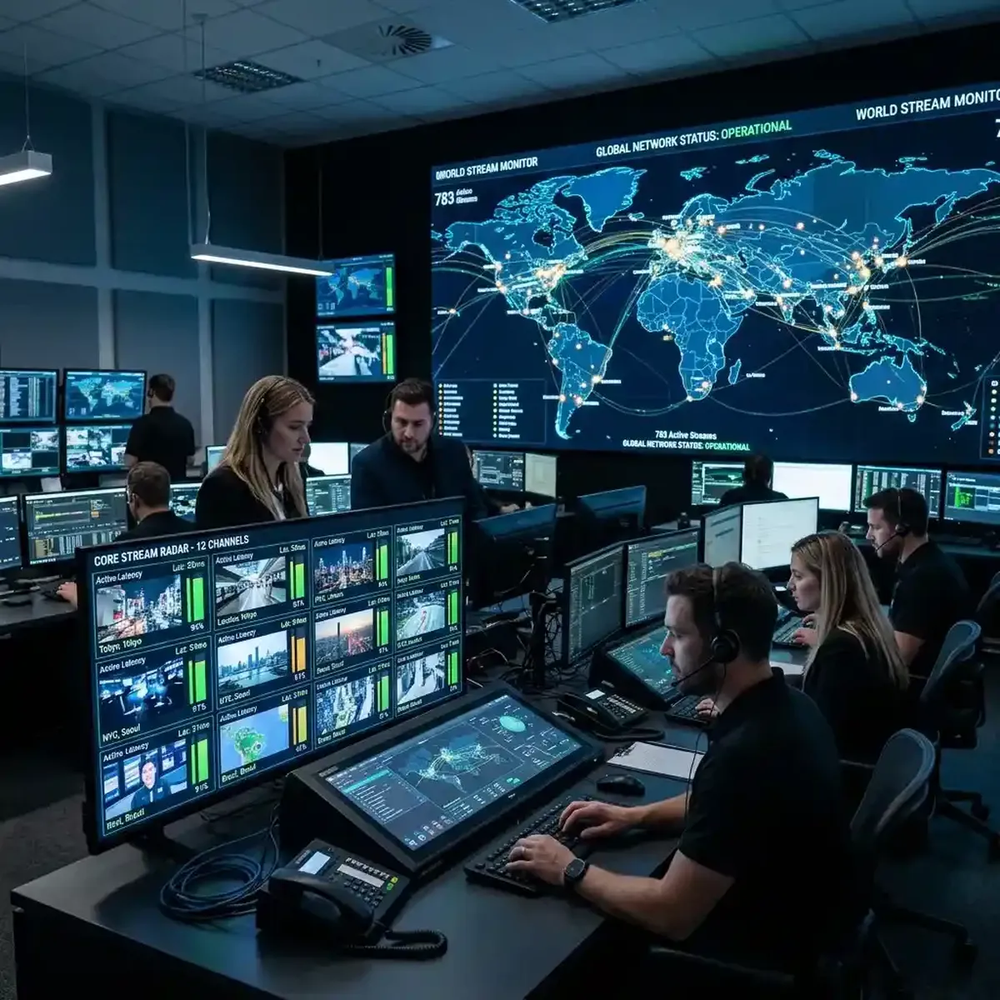

Professional Live Stream Monitoring: The 2026 Standard

In the hyper-accelerated communication landscape of 2026, the concept of "Live" has transitioned from a simple broadcast format into a high-stakes "Intelligence Field" where reality unfolds in real-time.
We have moved past the era of "Watching" and into the era of "Witnessing and Analyzing" at the speed of light. Whether you are a market analyst tracking a sudden crypto-liquidation, a journalist covering a geopolitical crisis in Europe, or a corporate strategist monitoring a viral brand scandal, your ability to witness events as they breathe is your ultimate competitive edge. The "Information Lag"—the delay between a real-world event and its appearance in a curated news feed—is a zone of extreme risk and opportunity. To navigate this effectively, you must move beyond the "passive consumption" of single-stream video and into the realm of "Total Situational Awareness." This deep-dive guide explores the principles of professional live monitoring and examines how you can build a high-velocity surveillance grid that achieves total situational awareness. Success in 2026 is about the speed of your truth-verification.
The Velocity of Life: Why Real-Time Observation is a Professional Requirement
The 2026 digital ecosystem is defined by "High-Velocity Spikes." A viral topic can transition from a niche community discussion to a global mainstream headline in a matter of minutes. These "Viral Inflection Points"—the exact moments when a story gains critical mass—are the most important data signals for any monitor. Traditional news broadcasts often miss these early signals because they are waiting for official verification. As a real-time monitor, your goal is to be in the "Pre-Viral" zone, watching the raw signals as they are first being discussed on platforms like X, Reddit, and Discord.
To track these inflection points effectively, you must monitor "Live Presence." This means being where the information is breaking, whether it's a "Polish Tech Community" live stream discussing a hardware launch or a global news portal covering a sudden economic shift. The key is to have your monitoring dashboard ready to cross-reference these signals immediately. By being a "First Responder" to digital data shifts, you position yourself to make informed decisions before the broader market or the general public settles on a single narrative. Real-time monitoring is about catching the "Whisper" before it becomes a "Roar."
Multi-Source Verification: Combatting Misinformation in Live Environments
One of the biggest challenges of live monitoring is the "Noise." During a breaking event, high-velocity misinformation can spread as quickly as the truth. To be an effective monitor, you must develop the skill of "Multi-Source Verification." This means not just seeing *that* something is happening, but cross-referencing it across diverse and high-authority platforms in real-time. If only one "Source" is reporting a major event, it remains a rumor; if three independent "Authority Layers" (perhaps on YouTube, X, and a live news portal) confirm it, it becomes "Actionable Intelligence."
A multi-stream intelligence setup (using tools like YoutubeMulti) is the ultimate tool for this verification process. Imagine having the official announcement on Tile 1. Tile 2 for a live social media feed tracking the event's hashtag. Tile 3 for a technical deep-dive from a trusted expert who specializing in the specific niche. Tile 4 for a live-updating market chart showing the real-world impact. This "Signal Triangulation" provides a level of context that single-feed research simply cannot match. For instance, seeing how the "Fin-Twit" community reacts to the latest bank interest rate decision while simultaneously monitoring the technical response on YouTube provides a direct window into the likely market direction. Total situational awareness is the result of focused, multi-source monitoring.
The Architecture of a Live Monitoring Grid: Designing for Clarity and Speed
The 2026 professional monitor requires a "Mission-Controlled Environment." Attempting to achieve situational awareness on a single screen is a recipe for information fatigue and missed signals. Real-time situational awareness requires "Visual Real Estate." For a professional, this means moving toward multiscreen setups or high-performance "Video Walls" that can display dozens of data streams simultaneously. The goal is to avoid "Tab-Switching"—which introduces cognitive friction and latency—and instead achieve a "State of Flow" where your eyes can scan the entire information landscape in a single glance.
Think about your information architecture. Dedicate your primary screen to your core "Decision-Making Feed" (e.g., your trading terminal or your drafting document). Use secondary screens for "Contextual Intelligence" (e.g., live news portals, social sentiment dashboards, technical specs, or competitor monitoring). By spatially separating your diverse information sources, you reduce the mental effort of "Contextual Recalibration." A 12-video grid isn't about watching 12 things; it’s about having 12 "radars" working for your specific objectives. In the world of real-time monitoring, your "Dashboard Design" is your "Thinking Architecture." Designing your environment is designing your success.
Technical Benchmarks: Latency, Buffering, and the 'True Edge' of Truth
What constitutes "Real-Time" in 2026? The benchmarks have shifted significantly. For "Passive Entertainment," a 5-second delay is acceptable. For "Strategic Intelligence," anything above 2 seconds is considered a risk. For "High-Velocity Trading or Gaming," the goal is sub-500ms. These technical benchmarks are the "Performance Specs" of your monitoring environment. To achieve total situational awareness, you must constantly monitor your own "Latency Budget" and identify the bottlenecks in your pipeline.
Use "Latency Detection Tools." Professional-grade dashboards (built with tools like YoutubeMulti) should include built-in "Latency Indicators" for every tile, showing the exact offset from the live edge. This allows you to immediately identify if a specific source is falling behind due to network congestion or server-side lag. By being aware of your "Temporal Position," you can adjust your decision-making risk accordingly. If you know Tile 1 is 3 seconds behind the real-world, you won't make a split-second market decision based on its visuals. Awareness of the "Delay" is a form of intelligence in itself. Modern success is about knowing the exact "Refresh Rate" of your truth. Total situational awareness is the result of focused, hardware-aware monitoring.
Future Outlook: AI-Generated Real-Time Highlights and Predictive Alerts
As we look toward 2027 and beyond, the future of live monitoring is undeniably data-driven and highly transparent. We are moving toward a world of "AI-Generated Real-Time Highlights," where an AI agent will automatically identify and "Highlight" the most emotionally significant or narrative-heavy moments in a stream for you. Future dashboards will likely include built-in "Focus Heat-Maps," real-time "Narrative Map" overlays, and seamless integration with global reputation-integrity databases. YoutubeMulti is already providing the foundation for this high-tech future, allowing you to build your own bespoke "Strategic Intelligence Grid" today.
Setting Up Your Unified Live-Monitoring Center with YoutubeMulti
For the professional analyst or creator, having total situational awareness of the social meta-narrative is non-negotiable. Using YoutubeMulti to build an "Operations Center" allows you to:
- Tile 1-4: The Primary Focus: Large, central tiles for your core objective (e.g., the primary live news or company announcement).
- Tile 5-10: The Strategic Intelligence: Medium-sized tiles positioned in the periphery for live sentiment, technical analysis (TA), and competitor monitoring.
- Tile 11: The Contrast Layer: A contrarian perspective or a different market index to ensure a balanced perspective and avoid an "Echo Chamber."
- Tile 12: The Regional Context: A live feed from the specific region affected by the news (e.g., a Polish-language news portal).
- Unified Sync Command: Use our software to resync all streams with a single click if network jitter causes a drift in the grid.
Conclusion: Final Thoughts on the Live-Monitoring Future
The 2026 world of information monitoring is a rewarding but demanding landscape of data, sentiment, and design. It is no longer enough to just "watch" content—you must "witness" it as it breathes. By utilizing advanced monitoring strategies and professional tools like YoutubeMulti, you can ensure that you are always at the center of the intelligence curve. Don't just watch—monitor, analyze, and build your digital legacy in the multi-stream future. The era of total situational awareness has arrived.